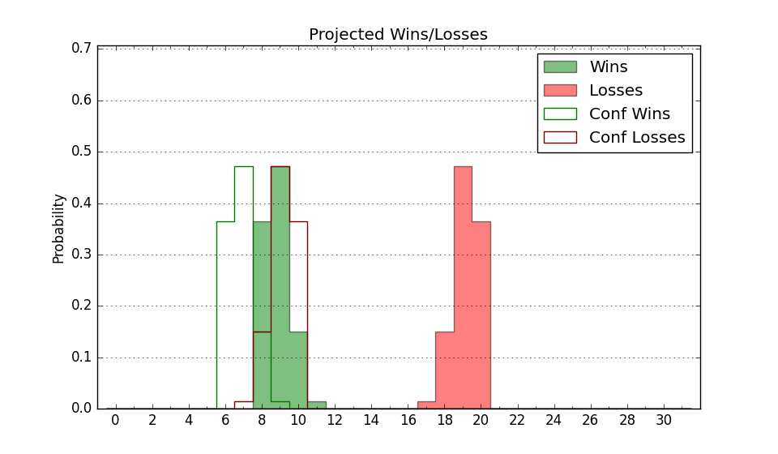

| Home | Game Probabilities | Conferences | Preseason Predictions | Odds Charts | NCAA Tournament |
| City: | Stephenville, Texas | |
| Conference: | Western (5th)
| |
| Record: | 6-7 (Conf) 8-17 (Overall) | |
| Ratings: | Comp.: -13.3 (303rd) Net: -13.4 (303rd) Off: 92.3 (354th) Def: 105.7 (165th) SoR: 0.0 (115th) |
| Remaining | ||||||
|---|---|---|---|---|---|---|
| Date | Opponent | Win Prob | Pred. | |||
| 2/27 | Abilene Christian (229) | 46.3% | L 63-64 | |||
| 3/6 | @ California Baptist (158) | 12.3% | L 58-71 | |||
| 3/8 | Utah Valley (119) | 24.4% | L 60-67 | |||
| Previous | Game Score | |||||
| Date | Opponent | Win Prob | Result | Off | Def | Net |
| 11/4 | @SMU (36) | 1.7% | L 62-96 | 2.1 | -8.0 | -5.9 |
| 11/9 | Sam Houston St. (146) | 30.3% | L 62-91 | -15.7 | -6.1 | -21.8 |
| 11/12 | @Florida St. (81) | 4.5% | L 52-72 | -9.5 | 18.5 | 8.9 |
| 11/17 | @Baylor (19) | 1.1% | L 41-104 | -21.9 | -22.1 | -44.0 |
| 11/21 | @Michigan (21) | 1.1% | L 49-72 | 5.5 | 11.9 | 17.5 |
| 11/29 | (N) Iona (292) | 48.1% | L 51-62 | -11.4 | -8.2 | -19.5 |
| 11/30 | (N) Hofstra (219) | 30.3% | W 61-59 | 14.8 | 1.4 | 16.1 |
| 12/1 | (N) Indiana St. (213) | 29.3% | L 71-87 | 6.0 | -18.5 | -12.5 |
| 12/8 | @UCF (80) | 4.5% | L 51-66 | -8.7 | 13.4 | 4.7 |
| 12/16 | @UTEP (134) | 10.2% | L 62-67 | 12.9 | 5.1 | 18.0 |
| 12/18 | @Oklahoma St. (102) | 7.1% | L 61-66 | 4.4 | 12.9 | 17.2 |
| 12/29 | Florida A&M (325) | 70.7% | W 70-60 | -4.7 | 10.8 | 6.1 |
| 1/4 | UT Arlington (207) | 42.3% | W 77-74 | 11.9 | -4.8 | 7.2 |
| 1/9 | @Southern Utah (277) | 30.0% | W 74-66 | 14.3 | 4.6 | 18.9 |
| 1/11 | @Dixie St. (268) | 28.2% | L 54-58 | -9.6 | 13.3 | 3.7 |
| 1/16 | California Baptist (158) | 32.2% | W 67-57 | 19.2 | 4.3 | 23.5 |
| 1/18 | @Grand Canyon (97) | 6.5% | L 64-88 | 14.1 | -16.5 | -2.4 |
| 1/23 | @Abilene Christian (229) | 20.2% | L 56-67 | -8.4 | 3.5 | -4.9 |
| 1/30 | Dixie St. (268) | 57.2% | W 61-54 | -6.6 | 12.2 | 5.6 |
| 2/1 | Southern Utah (277) | 59.3% | W 75-58 | 10.6 | 4.8 | 15.4 |
| 2/6 | @Seattle (163) | 12.7% | L 54-91 | 1.5 | -35.3 | -33.8 |
| 2/8 | @Utah Valley (119) | 8.7% | L 56-81 | 1.0 | -16.6 | -15.6 |
| 2/13 | Grand Canyon (97) | 19.1% | L 60-64 | 0.6 | 4.7 | 5.4 |
| 2/15 | Seattle (163) | 33.1% | W 67-64 | 0.7 | 11.7 | 12.4 |
| 2/22 | @UT Arlington (207) | 17.7% | L 57-67 | -11.5 | 8.6 | -2.9 |
| Stats & Trends | |||||
|---|---|---|---|---|---|
| Current | Day | Week | Month | Season | |
| Composite | -13.3 | -0.1 | -0.3 | -0.5 | -3.8 |
| Comp Rank | 303 | -- | -5 | -8 | -44 |
| Net Efficiency | -13.4 | -0.1 | -0.3 | -0.3 | -- |
| Net Rank | 303 | -- | -5 | -9 | -- |
| Off Efficiency | 92.3 | -0.0 | -0.5 | +0.3 | -- |
| Off Rank | 354 | -- | -2 | -2 | -- |
| Def Efficiency | 105.7 | -0.0 | +0.2 | -0.6 | -- |
| Def Rank | 165 | -- | +4 | -1 | -- |
| SoS Rank | 113 | -1 | +3 | -31 | -- |
| Exp. Wins | 8.8 | -0.0 | -0.2 | +0.9 | +0.3 |
| Exp. Conf Wins | 6.8 | -0.0 | -0.2 | +0.9 | +1.4 |
| Conf Champ Prob | 0.0 | -- | -- | -0.0 | -1.4 |

| Advanced Stats | ||
|---|---|---|
| Stat | Value | Rank |
| Off Eff FG % | 0.459 | 335 |
| Off Ast Ratio | 0.113 | 349 |
| Off ORB% | 0.266 | 243 |
| Off TO Rate | 0.208 | 364 |
| Off FT Ratio | 0.411 | 27 |
| Def Eff FG % | 0.531 | 251 |
| Def Ast Ratio | 0.155 | 253 |
| Def ORB% | 0.314 | 282 |
| Def TO Rate | 0.194 | 9 |
| Def FT Ratio | 0.461 | 356 |